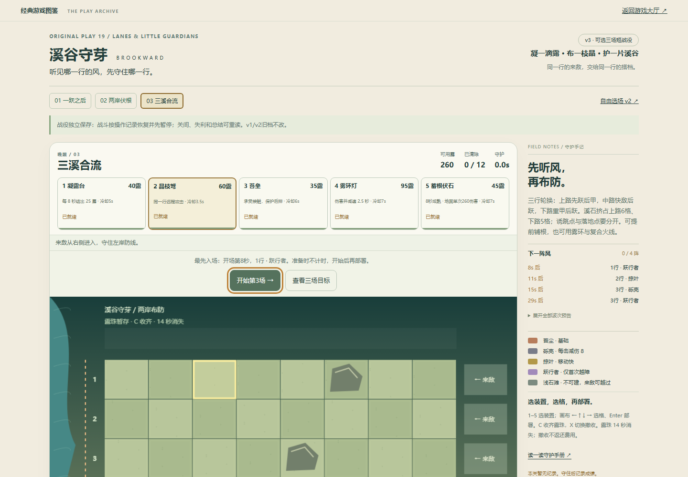
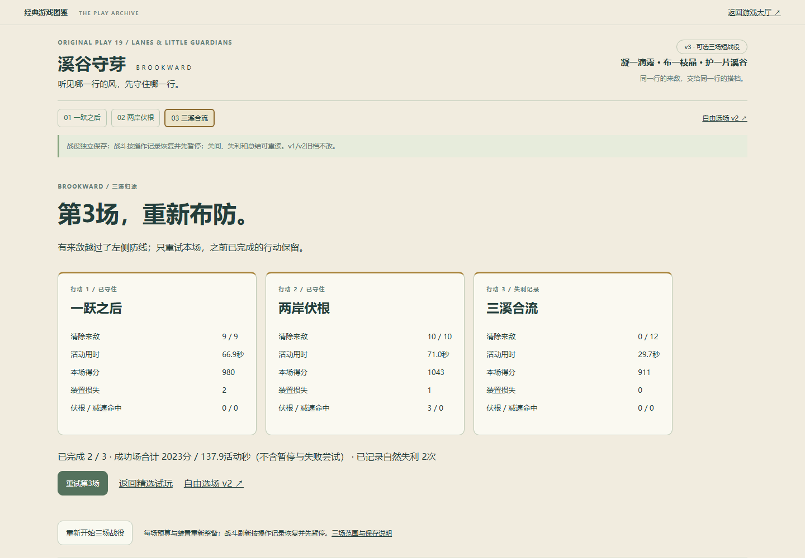
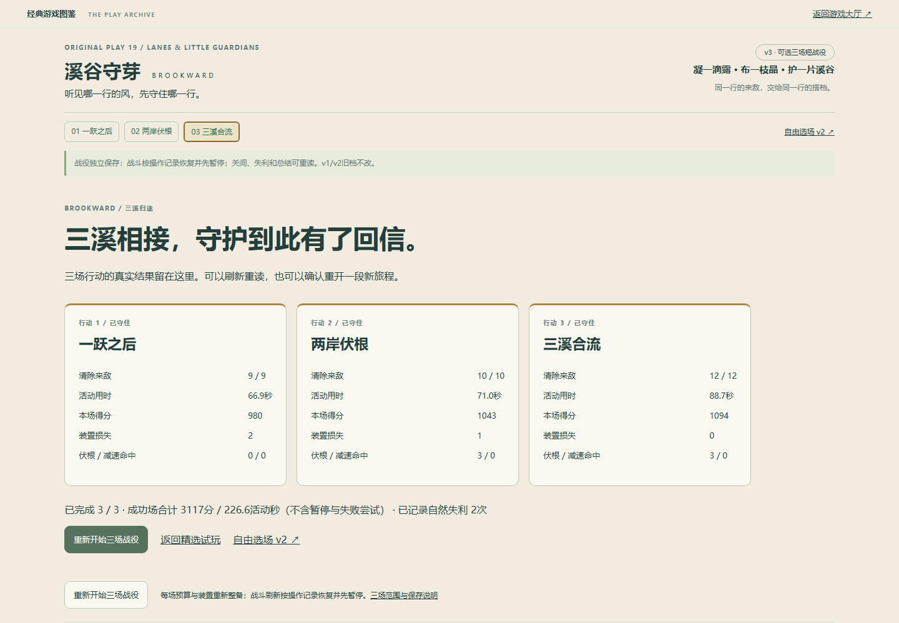
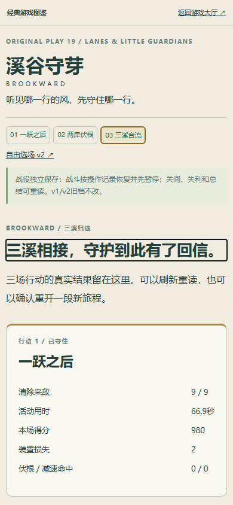
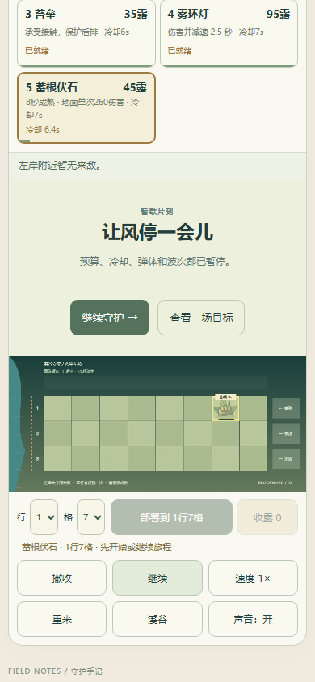

精选试玩 · 直接进入三场战役 → · 原v2自由选场
溪谷v3将原两场与一场新增原创终场串成完整目标。第三场“三溪合流”轮换三行的跃行、重甲与快敌，溪石限制不同格位；沿用原敌人和装置数值，新增的是路线组合与时机，不是只换背景或增加旧敌血量。全部五种装置、图集与绘制风格复用。
每场重新整备，胜利后由玩家进入下一场；失利只重试当前场，前场结果保留。活动刷新按合法操作记录恢复并先暂停，关间/失利/总结可重读。新键classic-atlas.brook.campaign.v3隔离旧档；原v1/v2和40目录保留，原两场引擎正文及重放结果保持一致。三场机制与保存说明。
证据分开：9组模型/存储/第三场显示检查；正常UI一条三场成功链，中间第三场刻意无输入自然失利再重试；390CSS原生touch仿真及独立配额故障。模型与脚本辅助不代表真人乐趣、真机触控、声音听感或整体精品验收。最终线上SHA和短操作核验由交付回报确认，这些截图为本地真实页面。
终场两种合法模型布局：伏根配后排火线，88.67活动秒、3次伏根/0减速；雾环配复合防线，86.72活动秒、0伏根/32次减速。空防29.7秒失败，忽略收露50.7秒失败。模型只说明这些方案及控制成立，不证明全部解法或普通玩家难度；普通UI实际结果见精简结果记录。





9组模型与边界 · 合法布局参考 · 模型复验 · 普通UI复验脚本。复验需现有Node与Python/Playwright环境，不自动安装依赖；仓库根目录运行node docs/brook-campaign-qa/test-model.mjs，浏览器脚本默认预览58252或加--online。
保留失败证据：初期缺装置顺序常量已修；UI脚本选项匹配可见标签而行列错位，改明确索引后复用真实失利档重试。第三场出敌时，行号提示错误读取仅两场的数据并停帧，已局部修正绑定、补针对性检查；前两场成绩保留。另一次执行通道中断后复用同一档续验。旧v2离页会保存自己的检查点，比较基线取离页之后；没有据工具或显示问题调整规则难度，也未重跑全库或宣称精品验收。